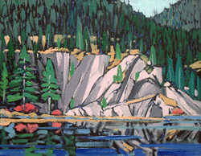

|
The painting "The Orange Popsicle Tartan" done in 1970. |
 |
A painting done as part of the "Dying Orchid" series. This painting, Dying Orchids B, was done in 1974. |
|  | One of Ted Godwins oil paintings called Cliffs Nootka |
 |
Another of the dying orchids, Dying Orchids D was also done in 1974 |
 |
Another of Ted Godwins oil paintings, this one called Here There Be Dragons - North Wales |
 |
A bust of Ted Godwin done by Joe Farfard. |